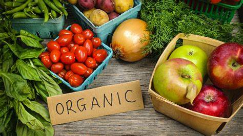
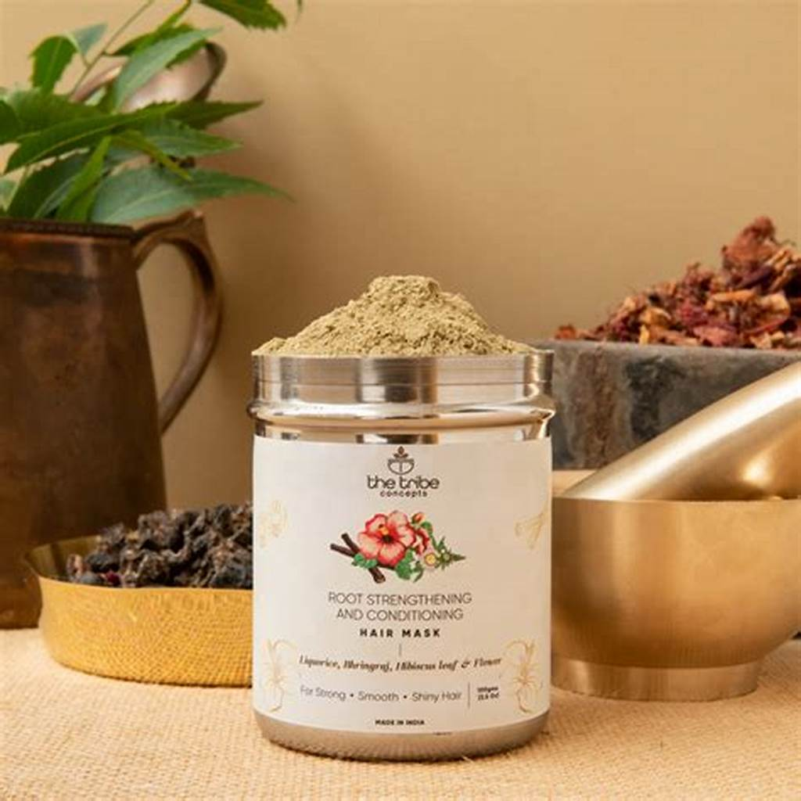

We invite you to join us on this journey towards a healthier, more sustainable future. Whether you’re a fellow farmer, a home gardener, or someone interested in organic produce, there’s something here for everyone. Follow our blog for tips, stories, and updates from the farm.
thank you for being a part of our community. Together, we can make a difference, one seed at a
Feel free to customize this content to better fit your farm’s unique story and practices. If you need more specific sections or additional posts, just let me know!
Our Products


